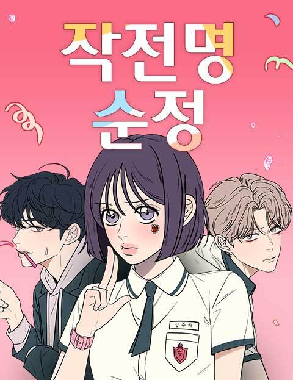

Raven of the Inner Palace

★★★★★
This was a really good show-I actually preferred it to a more popular show like "The Apothecary Diaries". Right now I am reading the first light novel but the new few novels won't be translated until October of 2024. "Raven of the Inner Palace" is about a 16 year old girl who is chosen as the raven consort by the god Uren Niangniang. Her job is to stay in the Inner Palace as the Raven Consort that involve performing mystical and spiritual tasks. She is known for her ability to use magic and is often called upon to solve supernatural problems, such as exorcising spirits, lifting curses, and providing spiritual guidance. Her role is crucial in maintaining the spiritual balance and addressing supernatural disturbances in the court. Of course, this leads her to learn about the stories of these spirits, friendship, and love.
Demon Slayer: Kimetsu no Yaiba Swordsmith Village Arc

★★★☆☆
I know this is an unpopular opinion but the third season of "Demon Slayer" was a let down. Compared to the last season somehow the upper moons are weaker than the lower moons? The pacing was off as well and it was so slow. I have no complaints about the CGI or animation, however.
Operation True Love
★★★☆☆
At the beginning I was intriqued by the concept but now I don't even know where the story is going. Every chapter is getting shorter and Su-ae doesn't even need points anymore. I'll continue to read the story to see how I progresses but I really hope it gets as good as it was in the beginning :(